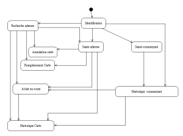
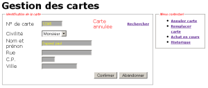
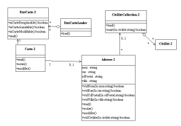

Rédaction des documents d’analyse avec U.M.L
Date de publication : 12/04/2006
6. Description d’une interface homme-machine
6.1. Préambule
6.2. Réunion : L’administration
6.3. Description du cas d’utilisation : Administration
6.4. Scénario Saisie carte
6.4.1. Fonctionnalité
6.4.2. Ecran
6.4.3. Cinématique
6.4.3.a. Etape 1
6.4.3.b. Etape 2
6.4.4. Contrôles
6.4.5. Fonctionnalités supplémentaires
6.5. Annexes
6.6. Epilogue
6. Description d’une interface homme-machine
6.1. Préambule
Le cas d’utilisation suivant est l’administration. Une réunion sur ce point est vite apparue nécessaire.
6.2. Réunion : L’administration
Le premier diagramme de classe semblait peu clair sur la relation entre une carte et une adresse. vous discutez de ce point avec le groupement. La solution retenue doit permettre d’effectuer des mailings, donc d’identifier des individus. Vous devez envisager aussi les cas dégradés (perte de la carte, piste illisible, ...).
Les règles suivantes sont retenues :
- Une personne n’a qu’une adresse
- Une personne peut avoir plusieurs cartes. Mais les cartes ne sont alors pas cumulatives (Les provisions de remises sont gérées au niveau de la carte et non au niveau de la personne). De ce principe, il est admis que la notion de personne est abandonnée. Le système ne saura gérer que des cartes.
- Il est possible qu’une personne perde sa carte. Il doit alors être possible d’annuler la carte pour éviter son utilisation suite à un vol.
- Une carte peut être endommagée. Il doit alors être possible de la remplacer par une nouvelle carte. Le report des provisions de remises et de l’historique des transactions est automatique.
Les commerçants sont enregistrés dans le système d’information :
- Les commerçants seront identifiés par leur numéro de carte commerçant. Ceci est une contrainte du constructeur de TPE.
- Le commerçant donnera un compte bancaire sur lequel seront effectués les virements -prélèvements
- Un commerçant peut abandonner la fidélité.
- Un commerce peut changer de propriétaire. Il est admis qu’une nouvelle carte commerçant sera émise par la banque.
Les autres fonctionnalités attendues du site web sont les suivantes :
- Recherche d’une carte par le nom et/ou la ville de la personne
- Historique des achats en cours pour une carte
- Historique des achats et des remboursements pour une carte
- Historique des achats et des remboursements pour un commerçant
6.3. Description du cas d’utilisation : Administration
Vous connaissez la démarche, allons au plus vite ....
| Acteur |
Rôle |
| Secrétaire |
Unique acteur du cas d’utilisation. Il est admis que les commerçants qui à termes se connecteront sur le site Web, ne disposeront pas de fonctions spécifiques. |
| Scénarios |
Description |
| Administration des adresses |
Permet d’enregistrer ou de modifier des adresses |
| ... |
|
Il est ici nécessaire de réaliser le diagramme de navigation du site Web. Un diagramme d’état semble suffisant.
Diagramme d’état : Navigation du site Web
6.4. Scénario Saisie carte
Le scénario doit permettre de saisir une adresse pour un numéro de carte. L’écran associé doit notamment permettre de visualiser l’état de la carte. Il n’y a pas d’apport particulier d’UML dans la description d’un écran. Vous restez classique ...
6.4.1. Fonctionnalité
- Permettre la saisie ou la modification d’une carte.
- Un menu contextuel permet d’accéder aux fonctions liès à la gestion des cartes.
6.4.2. Ecran
Ecran de gestion des cartes
6.4.3. Cinématique
6.4.3.a. Etape 1
L’utilisateur entre le numéro de la carte.
- Le bouton « Abandonner » permet de retourner au menu.
- Le bouton « Rechercher » permet d’aller sur l’écran de recherche. Suite à une recherche réussie, l’écran se positionne en étape 2.
- Le bouton « Confirmer » permet de passer en étape 2.
6.4.3.b. Etape 2
Le n° de carte devient en affichage.
- Si le numéro de la carte existe, les informations de la carte sont affichées, les liens « Annuler carte », « Remplacer carte », « Achat en cours » et « Historique » sont activés.
L’utilisateur effectue la saisie puis clique sur « Confirmer ».
- Le bouton « Abandonner » permet d’abandonner la saisie ne cours et revient en étape 1.
- Le bouton « Annuler carte » permet d’aller dans l’écran d’annulation de la carte.
- Le bouton « Remplacer carte » permet d’aller dans l’écran de remplacement de la carte.
- Le bouton « Achat en cours » permet d’aller dans l’écran de visualisation des achats de la série.
- Le bouton « Historique » permet d’aller en recherche des mouvements et des remboursements.
- Le bouton « Confirmer » permet d’enregistrer la saisie et revient en début d’étape 1.
6.4.4. Contrôles
M : Modifiable, O : Obligatoire
| Libellé |
M |
O |
Format |
Remarque |
| N° de carte |
|
X |
6 numériques |
|
| Statut |
|
|
|
Table des statuts. Voir « Annulation carte » et Remplacement carte » |
| Civilité |
X |
|
|
La civilité doit appartenir à la table des civilités définie par le système. |
| Nom |
X |
X |
32 Alpha |
|
| Rue |
X |
|
32 Alpha |
Attention la rue n’est pas obligatoire |
| Code postal |
X |
X |
5 Alpha |
Les caractères doivent être numériques. |
| Ville |
X |
X |
26 Alpha |
|
6.4.5. Fonctionnalités supplémentaires
- Il est impossible de modifier une carte remplacée ou annulée. Par contre, il est possible de visualiser les historiques.
- Si la carte est annulée ou remplacée, les liens « Annuler carte » et « Remplacer carte » sont inactifs.
6.5. Annexes
Diagramme de classe associée
Diagramme de classe : Administration
La classe EtatCarte nous indique comment activer ou désactiver les différents liens.
L’adresse porte des fonctions de contrôle sur ses attributs. (Il n’est pas possible en UML de spécifier des exceptions, mais au niveau design, il serra possible de remplacer les booléens retournés par des exceptions qui sont plus précises sur la condition refusée et permettent de passer des messages d’erreurs.).
6.6. Epilogue
Il est bien sur possible de compléter les annexes par tous les éléments nécessaire à la bonne compréhension du cas d’utilisation.
La descritpion des algorithmes peut prêter à discutions. Certains considèrent qu’ils doivent être validés par les utilisateurs, d’autres non ... Peut-être n’y a-t-il pas de bonne formule ... S’adapter en fonction du niveau de compréhension de l’interlocuteur à notre préférence ...
Faire de même pour les autres cas d’utilisation et scénario de l’administration.
Ce document est soumis à la licence GNU FDL traduit en français ici.
Permission vous est donnée de distribuer, modifier des copies de cette page tant que cette note apparaît clairement.
|


{kind=link}
{kind=link}
{kind=link}